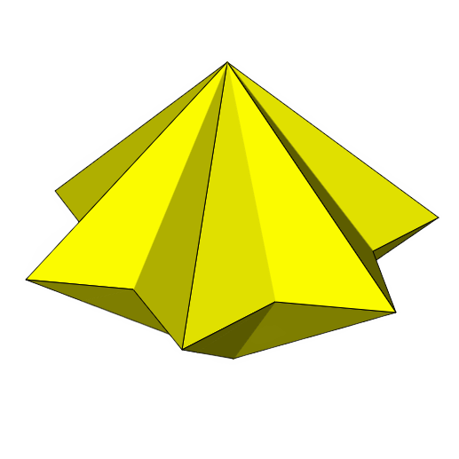
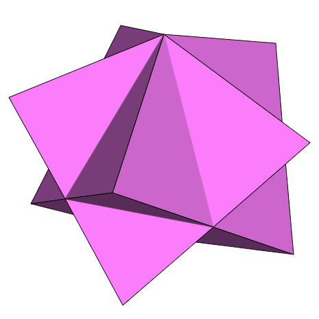

Semiregular Star Uniform
Text.
-
Star Prisms
A regular star prism consists of two regular N-sided star polygons joined together by N squares. A regular star antiprism consists of two regular N-sided star polygons joined together by 2N equilateral triangles. They are considered uniform polyhedra because they have regular polygons as faces and are vertex-transitive. Vertex transitivity means that for any two vertices of the polyhedron, there exists a translation, rotation, and/or reflection that leaves the outward appearance of the polyhedron unchanged yet moves one vertex to the other. Like regular prisms and antiprisms, they can be distinguished from other uniform polyhedra by the fact that they do not have polyhedral group (tetrahedral, octahedral, or icosahedral) rotational symmetries.
-
Star Antiprisms
Text.
-
Star Dipyramids
The duals of the regular star prisms are called star dipyramids, and the duals of the regular star antiprisms are called star trapezohedra. Each has one type of face and a constant dihedral angle. Like dipyramids and trapezohedra, they can be distinguished from other uniform polyhedra duals by the fact that they do not have polyhedral group (tetrahedral, octahedral, or icosahedral) rotational symmetries.
-
Star Trapezohedra
Text.